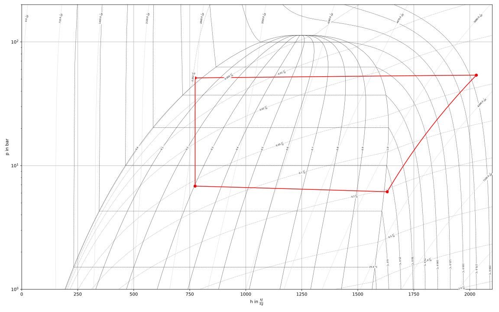
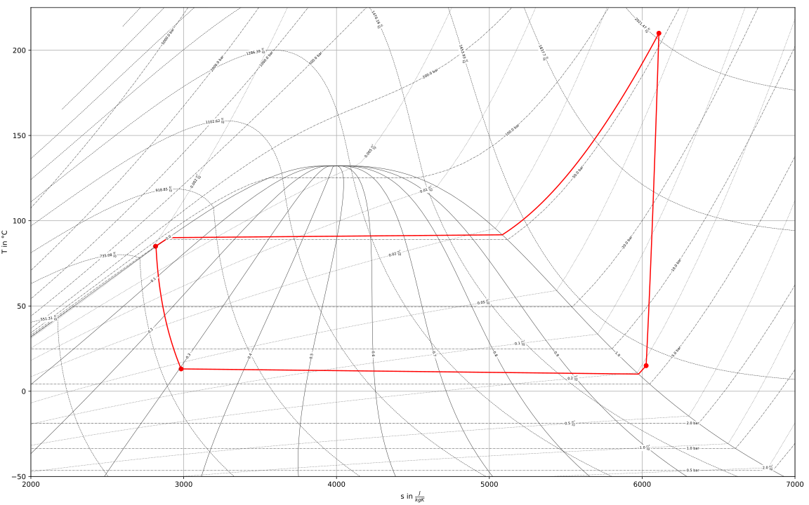

What’s New¶
Discover noteable new features and improvements in each release
Releases
v0.6.0 - Colored Chemicals (March, 12, 2022)¶
We have created a place for users of TESPy to exchange ideas and share their models and experience. Everyone is invited to get in touch and tune in on our GitHub discussions page.
New Features¶
A new component is introduced, the DiabaticCombustionChamber:
tespy.components.combustion.diabatic.DiabaticCombustionChamber. In contrast to the adiabatic combustion chamber, the new component implements pressure and heat losses. An example usage can be found in the API reference of the class linked above (PR #301).Gaseous mixtures now check for condensation of water in enthalpy and entropy are functions (PR #318).
Documentation¶
Add tutorial for the
DiabaticCombustionChamber(PR #321).
Bug Fixes¶
Other Changes¶
Contributors¶
Francesco Witte (@fwitte)
v0.5.1 - Exciting Exergy (January, 14, 2022)¶
Documentation¶
Improvements on the description of the exergy analysis results data. Additional dataframe added, that contains the aggregated component exergy analysis results (component and respective bus exergy data) (PR #293).
Bug Fixes¶
In the first offdesign calculation the connection parameter specifications in the LaTeX report were still reported in design mode (PR #290).
Labels of string representations of numeric labels in components, connections and busses have been misinterpreted as numeric values by the network_reader (PR #298).
Other Changes¶
Contributors¶
Francesco Witte (@fwitte)
v0.5.0 - Davis’ Domain (September, 29, 2021)¶
Documentation¶
Add a tutorial for the exergy analysis of a ground-coupled heat pump (GHCP). You can find it on the Tutorials and Examples pages (PR #282).
Bug Fixes¶
Add
is_resultflag to logarithmic temperature difference of heat exchangers.Lift pandas requirement to
pandas>=1.3.0(PR #285).
Other Changes¶
LaTeX model report can now be compiled by default (PR #286).
Contributors¶
Francesco Witte (@fwitte)
v0.4.4 - Reynolds’ Reminiscence (July, 14, 2021)¶
Documentation¶
Fix some typos here and there.
Bug Fixes¶
Fix pandas version 1.3.0 dependencies (PR #277).
Add missing results for some components in the results DataFrame of the network (PR #277).
Fix exergy balance equation of class merge
tespy.components.nodes.merge.Merge.exergy_balance(PR #280).Fix a lot of DeprecationWarnings in pandas (PR #280).
Other Changes¶
Contributors¶
Francesco Witte (@fwitte)
v0.4.3-003 - Grassmann’s Graph (May, 17, 2021)¶
Documentation¶
Fix typos in the HeatExchanger classes API docs.
Add two more examples for exergy analysis setups.
Other Changes¶
Remove Python3.6 support.
Make it possible to include results in automatic model report, for more information see the corresponding section in the documentation: TESPy Networks Postprocessing (PR #267).
Contributors¶
Francesco Witte (@fwitte)
v0.4.3-001 - Grassmann’s Graph (May, 12, 2021)¶
Documentation¶
Some minor changes in documentation.
Other Changes¶
Check for
key in dictionaryinstead ofkey in dictionary.keys()in boolean operations (PR #264).Rename GitHub branches: master to main (Issue #266).
Contributors¶
Francesco Witte (@fwitte)
v0.4.3 - Grassmann’s Graph (April, 29, 2021)¶
New Features¶
Automatic provision of input data for the sankey diagram class of the plotly library to generate exergy sankey diagrams. For example, the diagram of the solar thermal power plant presented in the thermodynamic analyses section

(PR #251).
The results of your simulation are much more easy to bulk access: The
tespy.networks.network.Networkclass provides you with a results dictionary containing DataFrames with all data necessary. The keys of the dictionary are:'Connection'the class names of the different components used, e.g.
'Turbine'or'HeatExchanger'the labels of the busses, e.g.
'input power'
The pandas DataFrame provides you with the SI-values for components and busses as well as all fluid property data of the connections in respective specified unit. For example:
mynetwork.results['Connection'] mynetwork.results['Turbine']
(PR #255).
Documentation¶
An own chapter for the exergy analysis toolbox has been added (PR #251).
Fix some typos in the code of heat pump tutorial (PR #260).
Update component parameter data type specifications according to 0.4.x API in docs and add missing parameters in HeatExchanger classes (PR #260).
Fix broken links to characteristic map functions of class
tespy.components.turbomachinery.compressor.Compressor(PR #263).
Bug Fixes¶
Other Changes¶
Add a timestamp for the automatic model documentation feature (PR #248).
Move from travis to GitHub actions (PR #249).
Specified Bus values are now colored in the
tespy.networks.network.Network.print_results()method (PR #255).Remove building figures for characteristics from docs generation (PR #251).
Contributors¶
Francesco Witte (@fwitte)
v0.4.2 - Fixes for User’s Universe (February, 11, 2021)¶
API Fixes/Changes¶
Due to a bug/double structure in the network properties of a model, specification of component or connection parameters when the component or connection instance was accessed via its label within the network, the wrong copy of the instance was accessed when using PyGMO in some cases. The method off accessing components and connections via label has therefore changed in the following way.
Old method:
conn = mynetwork.connections['connection label'] comp = mynetwork.components['component label']
New method:
conn = mynetwork.get_conn('connection label') comp = mynetwork.get_comp('component label')
To iterate through all components or connections of the network use something like:
for conn in mynetwork.conns['object']: print(conn.label) for comp in mynetwork.comps['object']: print(comp.label)
Accessing busses remains untouched (PR #247)
Bug Fixes¶
Saving data of characteristics and reloading from the .csv file structure was broken if more than one component of the same class was part of the network (PR #246).
Contributors¶
Francesco Witte (@fwitte)
v0.4.1 - User’s Universe (February, 7, 2021)¶
New Features¶
Add functionalities for user defined equations. The user can define individual functions that can be applied on connection parameters. E.g. in order to couple mass flow values at some point of the network to temperature values at a different point. Generic equations can be applied: There are no restrictions as long as the partial derivatives are provided correctly. For extensive examples have a look at the API documentation of class
tespy.tools.helpers.UserDefinedEquationor in the respective section in the online documentation (PR #245).
Documentation¶
Bug Fixes¶
Fix RuntimeError in CombustionChamberStoich class (PR #244).
Other Changes¶
Contributors¶
Francesco Witte (@fwitte)
v0.4.0 - Gibbs’ Gallery (January, 27, 2021)¶
API Changes¶
In order to stick closer to the PEP 8 style guide we changed the names of all classes in TESPy to
CamelCaseinstead ofsnake_caseas the latter is reserved for methods. This means, you need to change your import like in the following examples:from tespy.components import Turbine, CombustionEngine from tespy.components import HeatExchanger, HeatExchangerSimple from tespy.connections import Connection from tespy.connections import Bus from tespy.connections import Ref from tespy.networks import Network from tespy.tools.characteristics import CharLine # but keep e.g. from tespy.networks import load_network
The examples in the online documentation and the examples repository have been adjusted accordingly (PR #237).
The definition of power and heat transfer of the components
tespy.components.combustion.engine.CombustionEngineandtespy.components.customs.orc_evaporator.ORCEvaporatoras well as the heat loss values of the componentstespy.components.heat_exchangers.solar_collector.SolarCollectorandtespy.components.heat_exchangers.parabolic_trough.ParabolicTroughhave been changed to negative sign as all values are energy output streams (PR #215) and (PR #243).Specification of characteristics has changed. Use a dictionary instead of DataContainer specification if you want to update more than just the characteristic function. E.g. if you have the measurement data for the isentropic efficiency of a turbine like below. X-data are ratio of actual mass flow to design mass flow and y values are the ratio of actual isentropic efficiency to design value of the turbine. Say, you want to specify these data as
tespy.tools.characteristics.CharLineand the characteristics should be applied. In order to do that, pass a dictionary that contains theCharLineobject as'char_func'and setis_settoTrue:from tespy.components import Turbine from tespy.tools.characteristics import CharLine import numpy as np t = Turbine('myturbine') # ... design specs # ... design calculation # offdesign case, use char line line = CharLine( x=[0.1, 0.3, 0.5, 0.7, 0.9, 1, 1.1], y=np.array([0.6, 0.65, 0.75, 0.82, 0.85, 0.855, 0.79]) / 0.855) t.set_attr(eta_s_char={'char_func': line, 'is_set': True})
More information on characteristics specification and a fully working example can be found in the corresponding section in the online documentation (PR #243).
Characteristic Maps behave differently: Instead of two output dimensions
z1andz2they do now only hold one output dimensionz. The calculation of z as function of x and y does not change (PR #243).The
char_mapparameter of the componenttespy.components.turbomachinery.compressor.Compressorhas been split up into two separate parameters:char_map_eta_s: Map linking non-dimensional mass flow and speed line to isentropic efficiency.char_map_pr: Map linking non-dimensional mass flow and speed line to pressure ratio.
(PR #243).
Remove class Node (PR #243).
For reference specification, the
deltaparameter must be specified in the corresponding network unit, e.g. if your pressure unit is set tobar, thedeltawill be interpreted in bar, too (PR #243).
New Features¶
Automatic TESPy model documentation: You can generate an automatic model report in LaTeX format after a simulation. The document will contain all input parameters specified as well as all equations and characteristics applied in your previous simulation. Import and function call are implemented as follows. This feature will be under future development, driven by user requirements. If you have any feedback or suggestions or want to add new data you are very welcome to submit an issue in the GitHub repository or even open a pull request. The documentation code is located in the
tespy.tools.document_modelsmodule.from tespy.tools import document_model document_model(mynetwork)
For further information also check the corresponding section in the online documentation (PR #243).
IF97 back end for properties of water is now supported. A fix was implemented in TESPy to solve convergence issues near saturation in region 1. You can use the back end by adding
'IF97::water'to your network’s fluid list (PR #238, also see CoolProp Issue #1918).An automatic exergy analysis has been added. The method reliably works for temperature values that are larger than the ambient temperature. An implementation for temperature values crossing or below the ambient temperature is in the making. Also, combustion processes are not covered for now (PR #215). If you like to contribute, you are welcome to submit an issue in the GitHub repository.
Add a method
get_plotting_datato each component to export the input data required by FluProDia in order to generate the data required to display state changes in the components in a fluid property diagram. Each component returns a nested dictionary containing the respective data. E.g. the return value of avalve:{1: { 'isoline_property': 'h', 'isoline_value': 773.8970004397456, 'isoline_value_end': 773.8970004397456, 'starting_point_property': 'p', 'starting_point_value': 51.164150405253665, 'ending_point_property': 'p', 'ending_point_value': 6.831002318100345 }}
The diagrams could look like this:

Figure: logph diagram of NH3 with a simple heat pump cycle.¶

Figure: Ts diagram of NH3 with a simple heat pump cycle.¶
For more information see the respective documentation section (PR #234).
Add a flag to deactivate calculation of all component equations in every iteration. This improves stability in some cases but may reduce calculation speed (PR #226). To deactivate simply specify on calling the
tespy.networks.network.Network.solve()method:mynetwork.solve('design', always_all_equations=False)
Add a flag use cuda instead of numpy for matrix inversion. With cuda matrix inversion is outsourced to the graphics card. Using cuda additionally requires
cupyinstalled on your machine (PR #226). To activate simply specify on calling thetespy.networks.network.Network.solve()method:mynetwork.solve('design', use_cuda=True)
For more information on
cupyvisit the online documentation.Note
In general, calculation time depends on many factors of your local machine. You should try and check, if using cuda or disabling always all equations benefits your calculation times individually.
Documentation¶
Fix several broken links and typos (PR #236).
Bug Fixes¶
Other Changes¶
component |
parameter |
new value |
|---|---|---|
heat_exchanger_simple |
|
1e15 |
|
200 |
|
valve |
|
1e15 |
On some machines the coloring of the results printout does not work and displaces the table in an ugly way. To avoid this, the coloring is changed to optional (PR #229). Use the following line for non-colored printouts:
mynetwork.print_results(colored=False)
An error message is raised in case the user specifies a fluid vector containing fluids, that are not part of the network’s fluid list (PR #233).
An understandable error message is raised in case the user misses out on fluids required by components of class CombustionChamber or CombustionEngine (#7adff43a).
For improved convergence stability of the methods
tespy.components.heat_exchangers.simple.HeatExchangerSimple.kA_group_func()andtespy.components.heat_exchangers.simple.HeatExchangerSimple.kA_char_group_func(), the logarithmic temperature difference is calculated based on the mean temperature difference between ambient and inlet and outlet temperature, if the terminal temperature differences do not have the same sign (PR #225).Changes in the equation management of components for much easier maintenance and future development (PR #243).
Contributors¶
Francesco Witte (@fwitte)
Markus Brandt (@MarBrandt)
v0.3.4 - Darwin’s Delight (October, 13, 2020)¶
Documentation¶
Replace enthalpy starting value with
statekeyword in the heat pump tutorial and the examples from the oemof_examples repository (PR #214, 743bfeb).Add a new tutorial for efficiency optimization of a thermal power plant using TESPy and PyGMO (PR #220).
Fix some typos in the BibTeX data for the TESPy JOSS paper (PR #220).
Bug Fixes¶
Update the dictionary of busses, components and connections before every calculation. If a parameter is updated by user specification using the dictionary access method and the network object is copied, the dictionaries of the busses, components and connections point to a different object in some cases (d2537ca).
Other Changes¶
Add network check at the end of
tespy.networks.network_reader.load_network()function (PR #212).
Contributors¶
Francesco Witte (@fwitte)
Markus Brandt (@MarBrandt)
v0.3.3 - Maxwell’s Memory (July, 21, 2020)¶
New Features¶
In some cases - especially large networks and many simulation runs within a a single script - the fluid property memorisation added a lot of calculation time for searching through the lookup tables of previously calculated fluid property values. It is now possible to manually specify whether or not the fluid property memorisation is performed.
The memorisation benefits
networks using gaseous mixtures and
smaller networks using the HEOS back end.
The memorisation slows down
very large networks and
usage of tabular back ends (BICUBIC or TTSE).
In order to deactivate memorisation, add
memorise_fluid_properties=Falseon network creation, for example:from tespy.networks import network mynetwork = network( fluids=['BICUBIC::water'], memorise_fluid_properties=False)
(PR #211).
Other Changes¶
Reorder network initialisation process for improved maintenance and faster performance (PR #204).
Contributors¶
Francesco Witte (@fwitte)
v0.3.2 - Carnot’s Colors (June, 10, 2020)¶
New features¶
Colored printouts are available in the
print_results()method of the network class. There are three different color codes available with default settings:user specified parameters (
'set', blue)component parameters specified as variables (
'var', green)faulty parameters (
'err', red)
In order to change the colors, simply import
coloringfrom thetespy.tools.global_varsmodule and adjust the escape codes. For example, to reset all colors to white text:from tespy.tools.global_vars import coloring coloring['set'] = '\033[0m' coloring['err'] = '\033[0m' coloring['var'] = '\033[0m'
Bug fixes¶
Readd method for
T_mix_pscalculation for pure fluids: In case the fluid propagation did not go through (e.g. due to availability of good starting values) the fluid composition at a turbomachine’s inlet and outlet may not be equal (PR #207).Fix the calculation of mixture density: The density is calculated as sum of the densities of the mixture components at their respective partial pressure and the mixture temperature (PR #207). With the old method, the specific volume was calculated according to Amagat’s law, which produced incorrect values if one or more components of the mixture were liquid at the mixture’s temperature and pressure. See discussion about humid air propreties here: Issue #206.
Contributors¶
v0.3.1 - Fix for Mayer’s Merit (May, 29, 2020)¶
Bug fixes¶
Remove a debugging printout in the kA_func of the
tespy.components.heat_exchangers.simpleclass.
Contributors¶
Francesco Witte (@fwitte)
v0.3.0 - Mayer’s Merit (May, 21, 2020)¶
TESPy version 0.3.0 - Mayer’s Merit comes with a lot of new features and a publication in the Journal of Open Source Software. The paper is available at the website of the JOSS.
BibTeX citation:
@article{Witte2020,
doi = {10.21105/joss.02178}
year = {2020},
publisher = {The Open Journal},
volume = {5},
number = {49},
pages = {2178},
author = {Francesco Witte and Ilja Tuschy},
title = {{TESPy}: {T}hermal {E}ngineering {S}ystems in {P}ython},
journal = {Journal of Open Source Software}
}
New Features¶
Make entropy
myconn.s.valormyconn.s.val_SIand specific volumemyconn.vol.valormyconn.vol.val_SIrespectively available after simulation (PR #172).Connections, components and busses are now easily accessible on every network. Connections now have a label, which can be specified individually, the default value of the label is given by the following logic.
source:source_id_target:target_id, where source and target are the labels of the connected components.Access the objects with:
mynetwork.busses[‘mybuslabel’]
mynetwork.components[‘mycomponentlabel’]
mynetwork.connections[‘myconnectionlabel’]
(PR #173)
Specification of the CoolProp back end is now possible. You can specify the back end by adding it in front of the fluid’s name on creating a network, for example:
from tespy.networks import network fluid_list = ['air', 'BICUBIC::water', 'INCOMP::DowQ'] network(fluids=fluid_list)
If you do not specify a back end
HEOSwill be applied (as forairin this example). This has been the case until now as well, thus no further changes are required to match an 0.2.x application to the 0.3.x API. For all back ends available please refer to the fluid properties section. To specify the fluid vector on a connection leave out the back end specification, e.g.:myconnection.set_attr(fluid={'DowQ': 1, 'water': 0, 'air': 0})
(PR #174).
Unsetting a value is now also possible using
Noneinstead ofnp.nan(PR #178).It is possible to choose a base for your components when adding them to a bus:
'component': This means, the efficiency definition of the bus is
'bus': This means, the efficiency definition of the bus is
These definitions also apply to the characteristic line usage. The default setting (if you do not specify the base) uses
'base': 'component'. You therefore do not need do adapt your scripts regarding this change. For an example of the bus usage see the examples section below (PR #157).Within the busses’ printouts the efficiency of every component on the respective bus is displayed. Additionally, it is possible to get the bus value and the efficiency of a specific component on a specific bus.
to get the bus value use
mycomp.calc_bus_value(mybus)andto get the efficiency use
mycomp.calc_bus_efficiency(mybus)
where
mycompis a component object andmybusis a bus the component has been added to (PR #157).New component
tespy.components.nodes.droplet_separatorfor separation of a single fluid in two phase state into saturated gas and saturated liquid phase. An example is given in the docstrings of the class documentation (PR #186).New component
tespy.components.heat_exchangers.parabolic_troughfor concentrated solar power simulation. An example is given in the docstrings of the class documentation (PR #191).New property
min_iterof thetespy.networks.networks.networkclass, allowing to specify the minimum amount of iterations before a solution is accepted (PR #197).
Documentation¶
Documentation has been updated according to the API-changes.
Fixed many typos on the online-documentation.
Parameter renaming¶
Adding components to a bus now requires
'comp'instead of'c'and'param'instead of'p'(PR #157).The former parameter
kAhas been renamed tokA_charas the behavior in offdesign was following a characteristic instead of a constant value. Additionally a new parameterkAhas been implemented, which represents a specified constant value forkAin both design and offdesign cases (PR #199).
Testing¶
Move from nose to pytest (PR #165).
Add fluid property test for a mixture of a tespy_fluid with a third fluid and a mixture of the same individual fluids (PR #174).
Add a gasturbine model test for comparison of the stoichiometric combustion chamber with the standard combustion chamber (PR #174).
Add bus tests for efficiency definitions (PR #157).
Add Python 3.8, PEP and documentation build tests (PR #201).
Bug fixes¶
Increase the number of support points for tespy_fluid tabular data creation in order to lift accuracy to a more acceptable value (PR #174).
Fix the default characteristic line for compressor isentropic efficiency: The line did not have an intersection with the point 1/1 (PR #196).
If a temperature value of a mixture was not found within the maximum number of newton iterations in the
tespy.tools.fluid_propertiesmodule, the wrong value was still displayed in the output without a warning. In this case, the value will benanin the future and a warning message is displayed (PR #200).
Other changes¶
Improve naming in networks, components and connections modules (PR #172, PR #175).
The Parameter
T_rangeof networks is deprecated. The fluid property calls for mixtures have been modified to prevent errors when the temperature of the mixture is below the minimum or above the maximum temperature limit of a component of the mixture (PR #200).Restructure package skeleton (PR #201).
Changes in the API¶
The changes affect
reading design point information from the
design_pathreading starting value information from the
init_pathand loading networks with the network reader’s
tespy.networks.network_reader.load_network()method.
Data generated in older versions of TESPy can not be imported. In order to fix this follow the steps below.
rename the
compsfolder tocomponentsrename the
conns.csvfile toconnections.csv
and within the file rename the columns
stosources_idtosource_idttotargett_idtotarget_id
If you want to use the network reader,
create a
network.jsonfile.add the desired contents as listed below.
The fluids are represented in a dictionary containing the fluid’s names as keys
and the CoolProp back end as value. "HEOS" is the default back end,
which has been used until version 0.2.x in TESPy.
{
"fluids":
{
"CO2": "TTSE",
"O2": "HEOS",
"N2": "BICUBIC",
},
"T_unit": "C",
"h_unit": "kJ / kg",
"m_unit": "kg / s",
"h_range": [150, 3000]
}
Due to the addition of the CoolProp back end selection the
tespy.components.combustion.stoichiometric API changed
as well. Please refer to the
combustion chamber tutorial for the
new implementation.
If you are having trouble applying these changes, you are welcome to open an issue on our github repository.
Example¶
We have added a code example below to underline the changes regarding the bus
usage. Simply, a pump is connected to a source and a sink. The pump’s
efficiency and pressure rise are defined. We define three different busses
and add the pump to these busses with a given efficiency value of 0.95.
from tespy.components import pump, sink, source
from tespy.connections import bus, connection
from tespy.networks import network
nw = network(fluids=['H2O'], p_unit='bar', T_unit='C')
si = sink('sink')
so = source('source')
pu = pump('pump')
so_pu = connection(so, 'out1', pu, 'in1')
pu_si = connection(pu, 'out1', si, 'in1')
nw.add_conns(so_pu, pu_si)
bus1 = bus('bus 1')
bus1.add_comps({'comp': pu, 'char': 0.95, 'base': 'bus'})
# this yields a bus value smaller than the component value!!
bus2 = bus('bus 2')
bus2.add_comps({'comp': pu, 'char': 0.95, 'base': 'component'})
bus3 = bus('bus 3')
bus3.add_comps({'comp': pu, 'char': 1 / 0.95, 'base': 'component'})
nw.add_busses(bus1, bus2, bus3)
so_pu.set_attr(fluid={'H2O': 1}, m=10, p=5, T=20)
pu_si.set_attr(p=10)
pu.set_attr(eta_s=0.75)
nw.solve('design')
nw.print_results()
As you can see, the components value of the bus will always be the same. Due to the efficiency definitions as mentioned in the new features, the bus value of bus3 and bus1 are identical. bus3 implements the method applied so far (in case of a motor at least) and bus1 implements the new efficiency definition based on the bus value. For bus2 the efficiency definition is based on the component, thus the bus value is lower than the component value (which would be great in case of a motor, but unfortunately some thermodynamic experts may have issues with that…).
Contributors¶
Francesco Witte (@fwitte)
v0.2.2 - Rankine’s Realm (March, 6, 2020)¶
New Features¶
Allow initialisation for the primary variables from previous calculation. Until now, the user needed to save the network’s state and reload that state for his next simulation. This feature is enabled as default. If you want to disable this feature, you need to state
mynetwork.solve(..., init_previous=False)(PR #156).Extrapolation for characteristic lines is available. In default state, the upper or lower value range limit is used when a characteristic line is evaluated outside of the available x-value range. The
extrapolateparameter allows linear extrapolation, for an example see the corresponding sections in the online documentation: component characteristics, tespy characteristics (PR #159).Add a new component evaporator for geothermal organic rankine cycle. The component has inlets for geothermal steam brine. On the cold side, the orc working fluid is evaporated. Read more about this component in the API documentation:
tespy.components.customs.orc_evaporator(PR #148).
Documentation¶
Add method for automatic citations and references (PR #163).
Parameter renaming¶
Testing¶
Bug fixes¶
Fix the bugged tests for compressor characteristic maps (
tespy.components.turbomachinery.compressor.char_map_func()). The pressure ratio factor of the lowest speedline available in the default data ranges from about 0.2 to 0.5. Therefore the design pressure ratio should be higher than 5 (PR #156).
Other changes¶
Contributors¶
Francesco Witte (@fwitte)
v0.2.1 - Fourier’s Fable (February, 7 2020)¶
New Features¶
Back end modifications in order to improve calculation speed. For the results see (PR #147).
Documentation¶
Parameter renaming¶
Testing¶
Improve the heat pump test (PR #150).
Bug fixes¶
Prevent pandas 1.0.0 installation due to bug in the
to_csv()method (bug will be fixed in PR #31513 of pandas). Additionally,the version requirements of third party packages have been updated to prevent future bugs resulting from possible API changes (PR #146).There was a bug in the heat exchanger kA-functions (
tespy.components.heat_exchangers.simple.kA_func(),tespy.components.heat_exchangers.base.kA_func()andtespy.components.heat_exchangers.condenser.kA_func()). The factors for the heat transfer coefficient should not simultaneously amplify the value but instead with their inverse.
For simple heat exchangers,
 will be equal to 1
(PR #150).
will be equal to 1
(PR #150).
Other changes¶
Replacing some of the characteristic lines by generic ones. The simulation results using the default lines might slightly differ from the results using the original defaults (PR #149).
Contributors¶
Francesco Witte (@fwitte)
@maltefritz
v0.2.0 - Clausius’ Circus (January, 15, 2020)¶
TESPy Clausius’ Circus includes many back end adjustments for future development. Additionally, some new features have been implemented improving the usage of the software. Due to changes in the API, version 0.2.0 will not be compatible with older versions of TESPy!
The example section below quickly shows, how to modify your scripts in order to work with the new version.
New Features¶
Implemented a new component “cycle_closer”. This component may serve as substitute for a sink/source or splitter/merge combination in closed cycle simulations (PR #107).
Added optical efficiency to the “solar_collector”. The incoming radiation E no longer represents the actual absorption but the radiation on the collector surface area (PR #110).
Parameters
local_designandlocal_offdesignare now also available for network exports and imports (PR #109).Busses, components and connections are now equipped with
printoutattribute. For example, if you specifymyconn.set_attr(printout=False)the results of the specified connection will not be printed by theprint_resultsmethod of your network. This is especially useful, if you have a large network and only want to print the results at the most important points (PR #126).It is possible to place custom characteristic lines and maps in the
HOME/.tespy/datafolder and import these for your TESPy scripts. Have a look at the documentation for more information (PR #118).If the network check fails due to component inlets or outlets being connected to more than one connection at a time, all connections are printed for easier network topology debugging (PR #135).
Documentation¶
Full review of online documentation (PR #112).
Full review of the examples repository (PR #46 of oemof_examples).
Plots of default characteristic lines and maps are generated automatically on documentation build (PR #139).
Parameter renaming¶
New name for cogeneration_unit: combustion_engine (PR #105).
New name for subsys_interface: subsystem_interface (PR #107).
The module import shortcuts (
from tespy import ...) for components (cmp), connections (con), helpers (hlp), logger (logger), networks (nwk), network_reader (nwkr) are no longer supported (PR #108)! We instead implemented new shortcuts instead for tespy.networks and tespy.components modules (PR #118).The method
set_printoptionsfor thetespy.networks.networks.networkclass is not available anymore. Useyournetwork.set_attr(iterinfo=True/False)in future (PR #109).Parameter
interfacefor sinks and sources has been removed (PR #109).The method for loading networks from the network_reader module has been renamed from
load_nwktoload_network(PR #118).
Testing¶
Bug fixes¶
Bus value specification uses
is_setinstead ofval_setas the component properties data container is used (39ca830).Parameters
local_designandlocal_offdesignare now also available for network exports and imports (PR #109).Busses and characteristics are not exported, if none are used in the network. The network_reader can now handle missing bus.csv, char_line.csv and char_map.csv (PR #127).
Some parameters of class
combustion_enginehave been printed out twice in the value range check (PR #135).
Other changes¶
Adjust logging levels for grouped component parameter initialisation (PR #111).
Implement pep8speaks (PEP8 checker) in GitHub repository (PR #131).
The subsystem architecture has been simplified. Your connections and components are saved to dictionaries to make accessing the individual properties much easier (PR #126). For a use case of subsystems, have a look at the district heating example.
Change the specification of set value for
dc_simpleclass fromval_settois_set(PR #138).Move the default characteristic function plots to the
tespy.datamodule documentation (PR #138).
Contributors¶
Francesco Witte (@fwitte)
@MarBrandt
@maltefritz
@jfreissmann
@stianchris
@FranziPl
Examples¶
Removed default import shortcuts
tespy 0.1.x
from tespy import cmp, cmp_char, con, hlp, logger, nwk, nwkr, subsys
tespy 0.2.x (example imports)
from tespy.components import heat_exchanger, turbine
from tespy.connections import connection, bus, ref
from tespy.networks import network, load_network
from tespy.tools import char_line, char_map
from tespy.tools import logger
Renaming components
tespy 0.1.x
from tespy import cmp
chp = cmp.cogeneration_unit('combined heat and power')
IF = cmp.subsys_interface('subsystem interface')
tespy 0.2.x
from tespy.components import combustion_engine, subsystem_interface
chp = combustion_engine('combined heat and power')
IF = subsystem_interface('subsystem interface')
Renaming tespy.networks functionalities
tespy 0.1.x
from tespy import nwkr
mynetwork = nwkr.load_nwk('path/to/exported/networkfiles')
mynetwork.set_printoptions(print_level='none')
mynetwork.set_printoptions(print_level='info')
tespy 0.2.x
from tespy.networks import load_network
mynetwork = load_network('path/to/exported/networkfiles')
mynetwork.set_attr(iterinfo=False)
mynetwork.set_attr(iterinfo=True)
Component characteristic specification
tespy 0.1.x
from tespy import cmp, hlp
turb = cmp.turbine('turbine')
x = [0.50, 0.75, 1.00, 1.25]
y = [0.90, 0.98, 1.00, 0.99]
char = hlp.dc_cc(is_set=True, x=x, y=y)
turb.set_attr(eta_s_char=char)
tespy 0.2.x
from tespy.components import turbine
from tespy.tools import char_line
turb = turbine('turbine')
x = [0.50, 0.75, 1.00, 1.25]
y = [0.90, 0.98, 1.00, 0.99]
char = dc_cc(is_set=True, func=char_line(x, y))
turb.set_attr(eta_s_char=char)
v0.1.4 (December, 12, 2019)¶
New Features¶
Implemented difference pressure vs mass flow characteristic line for valve (c4eec6d).
Documentation¶
Fix typos in docstrings in components module (PR #102).
Parameter renaming¶
Testing¶
Bug fixes¶
Other changes¶
This is the last release before version 0.2.0.
Contributors¶
Francesco Witte
v0.1.3 (November, 6, 2019)¶
New Features¶
Individual design path specification is available: Specify the design_path individually for single connections or a components in your network, if you want the individual design parameters be loaded from a different design case than the network’s design case given in the network’s design path (PR #84).
Implement local design and local offdesign features: It is possible to design a plant while some parts of the plant are in offdesign mode. This is useful, e.g. when designing an extraction turbine, where the district heating condenser is designed for maximum extraction and the backpressure turbine is designed for minimum extraction (PR #92).
Implement warning messages for all components, if the component’s properties are out of physical bounds. The bounds can be customized when specifying a property by data containers (read more at component parameter specification), (PR #85).
Documentation¶
Parameter renaming¶
Testing¶
Bug fixes¶
Offdesign values for connections are specified from the design case files (PR #84). Before, the offdesign values were the actual values of the fluid property in the last calculation (which is not necessarily the design case).
Add debug logging message, if the enthalpy is adjusted on connections with the keyword
statespecified (PR #85).
Other changes¶
Improved calculation speed for fluid mixture properties with the parameter T0 as starting value for root finding (PR #84).
Contributors¶
Francesco Witte
v0.1.2 (August, 6, 2019)¶
New Features¶
The water electrolyzer is available as new component of TESPy (PR #73).
The components
combustion chamberandcogeneration unitnow work with fuel mixtures, too. Specification of the component’s fuel is not required anymore, the software automatically detects, which fuels are connected to the component’s inlets. Available fuels are: methane, ethane, propane, butane and hydrogen (PR #79).Add busses to the
network's result printout.
Documentation¶
Parameter renaming¶
Testing¶
Bug fixes¶
Fix convergence check for negative minimum enthalpy values (PR #71).
Add an error message if the user did not add any connections to the network (PR #79).
Fix loading bus information from design-case .csv-file. Components can be attached to multiple busses now (PR #79).
Fix solar collector energy balance equation and adjust documentation (PR #83).
Other changes¶
Water Electrolyzer Example¶
from tespy import cmp, con, nwk
fluid_list = ['O2', 'H2O', 'H2']
nw = nwk.network(fluids=fluid_list, T_unit='C', p_unit='bar')
# sinks and sources
fw = cmp.source('feed water')
oxy = cmp.sink('oxygen sink')
hydro = cmp.sink('hydrogen sink')
cw = cmp.source('cooling water')
cw_hot = cmp.sink('cooling water out')
# specification of electrolysis efficiency
el = cmp.water_electrolyzer('electrolyzer 1', eta=0.8, design=['eta'], offdesign=['eta_char'])
# hydrogen compression
comp = cmp.compressor('compressor', eta_s=0.9)
# specify the feed water mass flow
# the fluid composition at the feed water inlet and the oxygen as well as
# hydrogen outlets are not required. These parameters are set automatically.
fw_el = con.connection(fw, 'out1', el, 'in2', m=0.1, p=10, T=15)
el_o = con.connection(el, 'out2', oxy, 'in1')
el_cmp = con.connection(el, 'out3', comp, 'in1', T=50)
cmp_h = con.connection(comp, 'out1', hydro, 'in1', p=50)
# cooling water specifications
cw_el = con.connection(cw, 'out1', el, 'in1', fluid={'H2O': 1, 'H2': 0, 'O2': 0}, p=5, T=15)
el_cw = con.connection(el, 'out1', cw_hot, 'in1', T=45, p=4.9)
nw.add_conns(fw_el, el_o, el_cmp, cmp_h, cw_el, el_cw)
# solve design case
nw.solve('design')
nw.save('tmp')
# test offdesign case
nw.solve('offdesign', design_path='tmp')
# change feed water flow and recalculate operation
fw_el.set_attr(m=0.05)
nw.solve('offdesign', design_path='tmp')
Contributors¶
Francesco Witte
Tim Hoener, Nils Stolze, Markus Brandt
v0.1.1 (May, 14, 2019)¶
New Features¶
Specifcation of temperature below or above boiling point temperature with
Td_bpkeyword on connections (PR #64).Path specifications for the
init_pathanddesign_pathin the networks module as well aspathin the network_reader module now work with relative and absolute paths. The feature has been tested on windows and linux machines (PR #66).
Documentation¶
Updated “Using TESPy” according to the new features, you can find an Example for the usage of the
Td_bpand thestatekeyword at the bottom of this release message.
Parameter renaming¶
Testing¶
Tests and doctests have been adjusted and updated to test the new features.
Added software tests for OS X (PR #68), windows tests to follow.
Bug fixes¶
Other changes¶
Modified printouts of connection properties for
network.print_results()-function (668ca6)Changed access to imported network’s connections (
mynetwork.imp_conns['{source}:{source id}_{target}:{target id}'], replace{...}by the respectve component or id). (a5a867).Improved convergence stability for temperatures specified near to the two phase area using the keyowrd
state='l'(for liquid) orstate='g'(for gaseous). The convergence check manipulates the enthalpy values at this connection in order to meet the phase specification (PR #64).
Example¶
from tespy import cmp, con, nwk
import numpy as np
# network
fluid_list = ['NH3', 'water']
nw = nwk.network(fluids=fluid_list, T_unit='C', p_unit='bar', h_unit='kJ / kg')
# components
tesin = cmp.sink('TES in')
tesout = cmp.source('TES out')
hsin = cmp.sink('HS in')
hsout = cmp.source('HS out')
he = cmp.heat_exchanger('heat exchanger')
# connection
tes_he = con.connection(tesout, 'out1', he, 'in2')
he_tes = con.connection(he, 'out2', tesin, 'in1')
hs_he = con.connection(hsout, 'out1', he, 'in1')
he_hs = con.connection(he, 'out1', hsin, 'in1')
nw.add_conns(tes_he, he_tes, hs_he, he_hs)
# heat exchanger parameters
he.set_attr(pr1=0.98, pr2=0.98, ttd_u=42, Q=-90e3)
# hot side parameters
hs_he.set_attr(T=70, p=9.4, fluid={'NH3': 1, 'water': 0})
he_hs.set_attr(T=35)
# cold side inlet
tes_he.set_attr(T=18, p=5, fluid={'NH3': 0, 'water': 1})
# solve
nw.solve('design')
fill = '############################################################'
print(fill)
print('See, the calculation did not work: The temperature value for the '
'hot side outlet is near to the two phase region. A singularity '
'appears in the solution process, as the temperature equation\'s '
'derivative towards enthalpy will be zero in this region.')
print(fill)
## let's retry with state keyword (state should be gaseous)
he_hs.set_attr(state='g')
nw.solve('design')
nw.print_results()
print(fill)
print('The state keyword prevents the fluids state at the hot side outlet '
'from going into two phase region, a solution is found.')
print(fill)
# so how does the superheating or subcooling work?
# remove state and temperature specification, add superheating specification
# temperature difference to boiling point = 10 K
he_hs.set_attr(state=np.nan, T=np.nan, Td_bp=10)
nw.solve('design')
nw.print_results()
print(fill)
print('The temperature at hot side outlet is 10 K above the (prior) unkown '
'boiling point temperature at that point.')
print(fill)
Contributors¶
Francesco Witte
Shuang Chen
v0.1.0 (February, 2, 2019)¶
New Features¶
Added new component node and modified equations for simple heat exchangers to work with negative mass flows. The node component is able to switch between merge and splitter equations according to the directions of the mass flows. Please beware, that the amount of the equations of a splitter and a merge is not the same, thus the number of equations provided by the node depend on the flow direction and may change within the calculation process. In order to make use of the node, a network should always contain more than one node, so that a different node can compensate a possible change in flow direction (PR #43).
Added examples for components, busses, connections etc. in the docstrings. You will find the examples in either your editors help pane or the online documentation of the API (PR #45).
Added an interface attribute for sinks and sources changing the component type from sink/source to subsys_interface when exporting the network, if you specify
interface=Truefor these type of components. This way, you can reimport the saved network and connect it to a different network. Also imported components, connections and busses are easily accessible by their label (components/busses) or their target with target id (connections). For an example, see the module documentationtespy.network_reader. (PR #46).Added logging (console and log-file), see how to use it (PR #51).
Documentation¶
Adapted documentation and examples in regard of new features. Examples have been moved to the oemof-examples repository.
Improved consistency in documentation of all modules (PR #45).
Registered a DOI for TESPy version 0.1.0.
Parameter renaming¶
networks
init_file -> init_path
design_file -> design_path
structure -> deprecated: Providing
structure=Trueon saving the network is not required anymore, the network structure is exported automatically.
Note
The initialisation method and handling of design and offdesign calculations has been adjusted. In future, please specify the path to the folder, where your results have been saved, e.g.:
mynetwork.save('path/to/folder')
mynetwork.solve('offdesign', design_path='path/to/folder', init_path='path/to/folder')
Testing¶
The examples in the docstrings are used as doctests.
Component tests have been implemented.
General tests for errors, printouts and fluid properties have been implemented.
Benchmark test for a heat pump model (still to be improved, see inline comments).
Testcoverage will be checked for every PR in the future!
See PR #52.
Bug fixes¶
Adjusted network export and network import to work for grouped component properties and characteristic maps (PR #46).
Redesigned pre- and postprocessing of component properties as some errors occoured before. Design parameters are now always gathered from the component .csv-file containing the design point information (saved design state of the network) (PR #50).
Other changes¶
Improved calculation speed by swapping the CoolProp.CoolProp.PropsSI-calls with CoolProp.AbstractState calls (PR #49).
Contributors¶
Francesco Witte
v0.0.5 (October, 25, 2018)¶
New Features¶
added new component: motoric cogeneration unit (79a1177). An example is provided here.
improved fluid property checks (8adc76c).
added bus characteristics for modeling variable efficiencys (e.g. for generator, motor, boiler) (79a1177).
isentropic efficiency characteristic for compressor linked to pressure ratio (85d317d).
added volumetric flow specification (63db64d).
Documentation¶
adapted documentation and (example code) in regard of new features.
fixed some typos in documentation.
Parameter renaming¶
compressor - vigv -> igva (inlet guide vane angle)
simple heat exchanger - t_a -> Tamb (ambient temperature)
solar collector - t_a -> Tamb (ambient temperature)
Testing¶
Bug fixes¶
Other changes¶
remodeled the characteristic map for compressors: if not specified, igva is assumed to be 0° (2425a77).
redesigned the printouts for component parameters (9465be6, b2c0897, cbbc1a1, 1e55e36, 2e795c2)
- custom variables are available for (977a5be):
turbomachines,
vessels,
simple heat exchangers (as well as pipes and solar collctors) and
cogeneration unit.
Contributors¶
Francesco Witte
Paul Hansen
v0.0.4 (September, 2018)¶
New Features¶
Documentation¶
improved the online-documentation with new structure and new examples (fa5e7ca, 6ef4d99). You will find the new examples in this section.
fixed some typos in different modules and the online-documentation
Testing¶
Bug fixes¶
Other changes¶
Contributors¶
Francesco Witte
v0.0.3 (July 05, 2018)¶
New Features¶
added new component: stoichiometric combustion chamber (0989493, 1e84386, 460dd9f, 6d10d2d).
added custom fluid databases, mainly for usage in stoichiometric combustion chamber (45e19ae, c3da785, 7cb1144).
added val_SI-attribute to datacontainers for setting ambient temperatures at simple heat exchangers (c4ba349, 3c7d94e).
added entropy balance for components (5944eae, b0aed98, e0839ab).
added pressure rise vs. flow rate characteristics for component pump (e79a191, e3409bf, 8fe6976).
added hazen-williams equation for pipe pressure loss calculation (bf0b865, 25c32bc, cee8cee).
added TESPy network import/export (7fefc59, 70ae908, 13ef1ad, 40e906c).
added data container for grouped component properties (83c9ff4).
Documentation¶
Testing¶
Bug fixes¶
convergence stability improvements for combustion chamber, fixes in the equations and derivatives (2c396f0, 59e3879, 10b2887).
fixes/improvements for the convergence control (6e8ea60, 43e8ee1).
fixed vapour quality specification (ec3865d).
added missing get_attr method for class characteristics (13cf730).
Other changes¶
Contributors¶
Francesco Witte
Shuang Chen
Thanks to Shuang and Haibing from the UFZ for implementing the hazen-williams equation!
v0.0.2 (April 07, 2018)¶
New Features¶
Changed architecture of the variables and component parameters. Every parameter is now a data container, giving the user more flexibility (e.g. specifiying a unit) and facilitating future development.
Changed architecture of fluid property function calls to make custom fluids or custom fluid property functions available.
Added custom fluid class to generate fluid properties from given fluid mixture.
Added generic component characteristics for turbine isentropic efficiency and cone law as well as for the heat exchangers heat transfer coefficient. On top, the user may use own values for the characteristic lines.
Added val_SI to data container for component properties for future development.
Documentation¶
Added documentation on how to handle data containers for variables and parameters.
Added an example for combustion chamber usage.
Testing¶
Bug fixes¶
Adjusted the generic pump characteristics to cause less instabilites and adjusted function parameters according to KSB.
Fixed bug in combustion chamber’s thermal input equation.
Fixed parameters for numerical calculation of derivatives.
Fixed starting relaxation parameter.
Other changes¶
Improved convergence stability for combustion chamber and heat exchanger.
Contributors¶
Francesco Witte
v0.0.1 (March 08, 2018)¶
First release.
Contributors¶
Francesco Witte
Thanks to - Paul-Jonas Hansen and - Malte Fritz for adding the tutorial and a lot of testing and trouble-shooting!